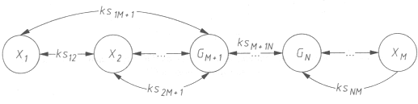
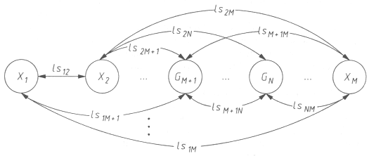
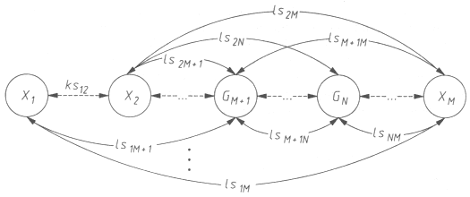
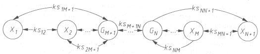
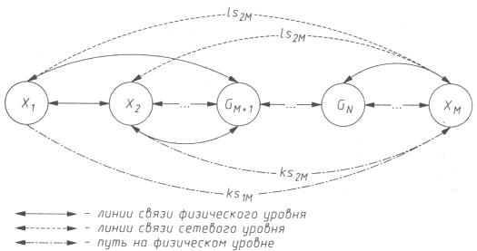
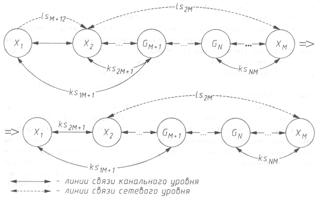
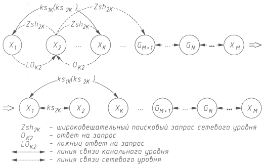
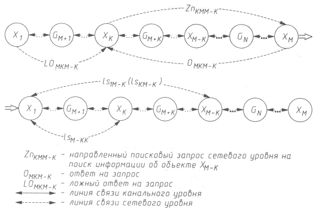
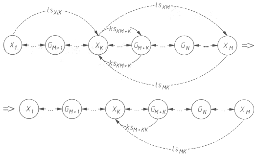

Безопасность >>>
АТАКА НА INTERNETМодели механизмов реализации типовых угроз безопасности РВС
Понятие типовой угрозы безопасностиИсследования информационной безопасности различных распределенных ВС, проводимые нами в течение последних лет, показали, что, независимо от используемых сетевых протоколов, топологии и инфраструктуры исследуемых распределенных ВС, механизмы реализации удаленных воздействий на РВС инвариантны по отношению к особенностям конкретной системы. Это объясняется тем, что распределенные ВС проектируются на основе одних и тех же принципов, а следовательно, имеют практически одинаковые проблемы безопасности. Поэтому и оказывается, что причины успеха удаленных атак на различные РВС одинаковы (подробнее см. в главе 6). Таким образом, появляется возможность ввести понятие типовой угрозы безопасности РВС. Типовая угроза безопасности - это удаленное информационное разрушающее воздействие, программно осуществляемое по каналам связи и характерное для любой распределенной ВС. Соответственно типовая удаленная атака - это реализация типовой угрозы безопасности РВС. Классификация типовых удаленных атак на РВС приведена в табл. 3.1. Рассмотрим модель типовых угроз безопасности РВС из множества угроз, направленных на инфраструктуру и протоколы РВС. Эта модель включает в себя:
Таблица 3.1. Классификация типовых удаленных атак на распределенные ВС
Графовая модель взаимодействия объектов РВСРассмотрим предлагаемую графовую модель взаимодействия объектов РВС в проекции на физический, канальный и сетевой уровни модели OSI. На входе у модели находится адрес объекта, с которого передается сообщение и на который необходимо доставить сообщение; на выходе - итоговый результат (доставлено ли сообщение). Основная задача данной модели РВС состоит в формировании на графе пути между заданными входными параметрами модели (между двумя объектами). Модель в проекции на физический уровень OSI определяет, как физически связаны и сообщаются между собой объекты РВС; в проекции на канальный уровень OSI устанавливает взаимодействие объектов на уровне аппаратных адресов сетевых адаптеров; а в проекции на сетевой уровень OSI определяет связь объектов на уровне логических адресов, например адресов IP. Пусть имеется РВС, включающая в себя N связанных между собой KS (линиями связи на физическом и канальном уровне) и LS (линиями связи на сетевом уровне OSI) объектов (М хостов хi и N(M+1) и роутеров gj где i = 1..М и j = М+1..N; М < N). Так как модель РВС в проекции на физический уровень ничем не отличается от той же модели в проекции на канальный уровень, то ограничимся введением универсальной линии связи KS, под которой будем понимать линию связи либо физического, либо канального уровня OSI. На физическом уровне под объектом понимается сетевой адаптер хоста или роутера, на канальном - аппаратный адрес сетевого адаптера. На этих уровнях модели выделим из всего множества хостов N - (М + 1) подмножество Хk где k = 1.. N - (М + 1), по числу роутеров в РВС, каждое из которых связано на физическом и канальном уровнях только с одним ближайшим роутером и представляет собой сетевой сегмент. Соответственно все объекты внутри данного подмножества Хk взаимодействуют между собой при помощи двунаправленных линий связи физического или канального уровня ksij, соединяющих i-объект с j-объектом; также каждый объект из подмножества Хk связан с соответствующим роутером Gm+k, через который и только через который объект из данного множества (сегмента) может сообщаться с объектом из другого множества (сегмента). Это правило будет введено для упрощения модели, так как при моделировании механизмов атак связь объекта сразу с несколькими роутерами не играет роли. Таким образом, на канальном и физическом уровнях модели из вершины Хk попасть в вершину Хk-p (р < k) можно только в том случае, если они находятся в одном подмножестве или путь проходит через последовательность узлов из множества G, следовательно, путь между любыми двумя объектами из множества Х не может проходить через другой, отличный от них транзитный объект из того же множества. На сетевом уровне под объектом понимается сетевой адрес хоста или роутера. На этом уровне каждый объект может взаимодействовать с любым другим объектом РВС при помощи однонаправленной или двунаправленной линии связи сетевого уровня lsij, соединяющей i-объект c j-объектом. Введем два правила. Во-первых, все объекты внутри одного подмножества Хk (сегмента) всегда связаны между собой физически, но не всегда соединены канальными линиями связи, а следовательно, на данном уровне все объекты потенциально могут быть связаны друг с другом линией канального уровня, но могут быть и не связаны. Во-вторых, путь на К-ом уровне модели OSI между двумя объектами РВС существует тогда и только тогда, когда он существует на всех уровнях от 1 до К-1, где 1 < К <= 7. Исключением является случай, когда между двумя объектами из одного подмножества (сегмента) Хk нет пути на канальном уровне, но существует путь на сетевом (широковещательный сетевой запрос (например, ARP), который получат все объекты в данном сегменте). Согласно предлагаемой модели: Х = {xi | i = 1..М}- множество хостов; G = {gi | j = М+1..N} - множество роутеров; KS = {kskL | k = 1..N, L = 1..N}- множество линий связи объектов на физическом или канальном уровне OSI; kskL - линия связи k-гo объекта с объектом L; LS = {lskL | k = 1..N, L = 1..N} - множество линий связи объектов на сетевом уровне OSI; lskL - линия связи k-гo объекта с объектом L; Хk = {хp | р = 1..М} - подмножество хостов внутри одного сегмента; KSk = {kskL | k = 1..М, L = 1..М} - подмножество линий связи объектов на физическом или канальном уровнях внутри одного сегмента; SEG = {Хk,Gm+k, KSk | k = 1..N - (М +1), m = 1..М} - множество сетевых сегментов с линиями связи физического или канального уровня. Объединение множеств RVSk = Xk U KSk U G = SEG образует модель взаимодействия объектов распределенной ВС в проекции на физический или канальный уровень модели OSI (рис. 3.2).  Рис. 3.2. Графовая модель взаимодействия объектов РВС в проекции на физический или канальный уровень модели 0SI Объединение множеств RVSs = X U G U LS образует модель взаимодействия объектов распределенной ВС в проекции на сетевой уровень модели OSI (рис. 3.3).  Рис. 3.3. Графовая модель взаимодействия объектов РВС в проекции на сетевой уровень модели OSI Объединение множеств RVS = RVSk U RVSs образует модель взаимодействия объектов распределенной ВС в проекции на физический (или канальный) и сетевой уровни модели OSI (рис. 3.4).  Рис. 3.4. Графовая модель взаимодействия объектов РВС в проекции на физический и сетевой уровни модели OSI Моделирование механизмов реализации типовых угроз безопасности РВС1. Анализ сетевого трафика Основной особенностью РВС, как отмечалось выше, является то, что ее объекты распределены в пространстве и связь между ними осуществляется физически (по сетевым соединениям) и программно (при помощи механизма сообщений). При этом все управляющие сообщения и данные, пересылаемые между объектами РВС, передаются по сетевым соединениям в виде пакетов обмена. Эта особенность привела к появлению специфичной для распределенных ВС типовой угрозы безопасности, заключающейся в прослушивании канала связи. Назовем данную типовую угрозу безопасности РВС "анализ сетевого трафика" (sniffing), сокращенно - "сетевой анализ". Реализация угрозы "сетевой анализ" позволяет, во-первых, изучить логику работы распределенной ВС, то есть получить взаимно однозначное соответствие событий, происходящих в системе, и команд, пересылаемых друг другу ее объектами, в момент появления этих событий. Это достигается путем перехвата и анализа пакетов обмена на канальном уровне. Знание логики работы распределенной ВС позволяет на практике моделировать и осуществлять типовые удаленные атаки, рассмотренные ниже, на примере конкретных РВС. Во-вторых, такая удаленная атака позволяет непосредственно перехватить поток данных, которыми обмениваются объекты распределенной ВС. То есть удаленная атака этого типа заключается в получении несанкционированного доступа к информации, которой обмениваются два сетевых абонента. Отметим, что при реализации угрозы нельзя модифицировать трафик, а сам анализ возможен только внутри одного сегмента сети. Примером информации, перехваченной при помощи такой типовой атаки, могут служить имя и пароль пользователя, пересылаемые в незашифрованном виде по сети. По характеру воздействия анализ сетевого трафика является пассивным воздействием (класс 1.1). Осуществление данной атаки без обратной связи (класс 4.2) ведет к нарушению конфиденциальности информации (класс 2.1) внутри одного сегмента сети (класс 5..1) на канальном уровне OSI (класс 6.2). При этом начало осуществления атаки безусловно по отношению к ее цели (класс 3.3). Для моделирования реализации данной угрозы воспользуемся разработанной графовой моделью взаимодействия объектов РВС в проекции на физический уровень модели OSI. На рис. 3.5 показана модель РВС при реализации данной угрозы. Реализация типового воздействия "сетевой анализ", как видно из графа на том же рисунке, характеризуется появлением на графе нового узла ХN+1 и нового ребра ksMN+1, а соответственно на множестве RVSk - нового объекта ХN+1 и новых линий связи KSMN+1 и KSNN+1.  Рис. 3.5. Графовая модель взаимодействия объектов РВС в проекции на физический уровень 051 при реализации типовой угрозы "сетевой анализ" 2. Подмена доверенного объекта или субъекта распределенной ВС Одна из основных проблем безопасности распределенной ВС заключается в осуществлении однозначной идентификации сообщений, передаваемых между субъектами и объектами (абонентами) взаимодействия. Обычно в РВС эта проблема решается следующим образом: в процессе создания виртуального канала объекты обмениваются определенной информацией, уникально идентифицирующей данный канал. Такой обмен называется handshake (рукопожатие). Однако отметим, что не всегда для связи двух удаленных объектов в РВС создается виртуальный канал. Практика показывает, что зачастую, как это ни странно, именно для служебных сообщений (например, от роутеров) используется передача одиночных сообщений, не требующих подтверждения. Как известно, для адресации сообщений в распределенных ВС используется сетевой адрес, уникальный для каждого объекта системы (на канальном уровне модели OSI - это аппаратный адрес сетевого адаптера, на сетевом уровне адрес определяется в зависимости от используемого протокола сетевого уровня, например адрес IP). Сетевой адрес также может использоваться для идентификации объектов РВС, однако это средство распознавания не должно быть единственным, так как довольно просто подделывается. Если в распределенной ВС применяются нестойкие алгоритмы идентификации удаленных объектов, то возможно типовое удаленное воздействие, реализация которого заключается в передаче по каналам связи сообщений от имени любого объекта или субъекта РВС. При этом существуют две разновидности данной типовой атаки:
В случае установленного виртуального соединения атака будет заключаться в передаче пакетов обмена с хоста кракера на объект атаки от имени доверенного субъекта взаимодействия (при этом переданные сообщения будут восприняты системой как корректные). Для осуществления такой атаки необходимо преодолеть систему идентификации и аутентификации сообщений, которая может использовать контрольную сумму, вычисляемую с помощью открытого ключа, динамически выработанного при установлении канала, случайные многобитные счетчики пакетов, сетевые адреса станций и т.д. Однако на практике, например в ОС Novell NetWare 3.12-4.1, для идентификации пакетов обмена используются два 8-битных счетчика: номер канала и номер пакета [11]; в протоколе TCP/IP для идентификации используются два 32-битных счетчика. Как было отмечено ранее, для служебных сообщений в распределенных ВС часто используется передача одиночных запросов, не требующих подтверждения, а следовательно, создание виртуального соединения является необязательным. Атака без создания такого соединения заключается в передаче служебных сообщений от имени сетевых управляющих устройств, например от имени маршрутизаторов. Очевидно, что в этом случае для идентификации пакетов могут использоваться только определенные заранее статические ключи, что довольно неудобно и требует сложной системы управления ключами. Однако в противном случае идентификация таких пакетов без установленного виртуального канала возможна лишь по сетевому адресу отправителя, который, как уже отмечалось, легко подделать. Посылка ложных управляющих сообщений может привести к серьезным нарушениям работы распределенной ВС, например к изменению ее конфигурации. Подмена доверенного объекта РВС является активным воздействием (класс 1.2), совершаемым с целью нарушения конфиденциальности (класс 2.1) и целостности (класс 2.2) информации по наступлении на атакуемом объекте определенного события (класс 3.2). Данная удаленная атака может являться как внутрисегментной (класс 5.1); так и межсегментной (класс 5.2), иметь обратную связь с атакуемым объектом (класс 4.1) или не иметь ее (класс 4.2), осуществляясь на канальном (класс 6.2), сетевом (класс 6.3) и транспортном (класс 6.4) уровнях модели OSI.  Рис. 3.6. Графовая модель взаимодействия объектов РВС при реализации типовой угрозы "подмена доверенного объекта или субъекта РВС" в проекции на физический и сетевой уровни Для моделирования реализации данной угровы воспользуемся разработанной графовой моделью взаимодействия объектов РВС в проекции на физический и сетевой уровни эталонной модели OSI. На рис. 3.6 показана модель РВС при реализации данной угрозы. Поясним ее. Пусть объект Х2 взаимодействует с объектом ХM. На графе это взаимодействие на сетевом уровне показано двунаправленным ребром ls2M, которое располагается между вершинами Х2 и XM. Пусть с объекта Х1 осуществляется реализация данной угрозы: предположим, объект X1 на сетевом уровне выдает себя за объект X2 при взаимодействии с объектом XM. Тогда, согласно введенному правилу образования ребер графа в модели РВС в проекции на сетевой уровень, на графе появляется еще одно однонаправленное ребро ls2M, которое соединяет вершины Х1 и ХM (если объект Х1 при связи с объектом ХM выдает себя за объект Х2 то между вершинами X1, и ХM появляется не ребро ls1M, а ребро ls2M). Таким образом, объект ХM, получив сообщение от имени X2, отправленное объектом X1, посылает ответное сообщение на Х2 (двунаправленное ребро ls2M или однонаправленное ребро lsM2). Двунаправленному ребру ls2M между вершинами Х2 и ХM на физическом уровне соответствует путь ks2M (путь ks2M образуется из последовательности ребер, которые нужно пройти между узлами Х2 и ХM на физическом уровне, то есть ребер ks2M+1, ksM+1N, ksNM, и по закону транзитивности совокупность этих ребер образует ребро ks2M). А однонаправленному ребру ls2M между вершинами X1 и ХM на физическом уровне соответствует путь ks1M, что неверно, так как нумерация пути между узлами на физическом и сетевом уровнях должна совпадать (например, между узлами М и N пути ksMN и lsMN), и данному ребру на физическом уровне будет соответствовать путь ks2M. Следовательно, реализацию данной угрозы можно определить по изменившемуся на физическом уровне пути при взаимодействии объектов Х2 и ХM. Отсюда следует, что реализация типовой угрозы "подмена доверенного объекта или субъекта РВС" характеризуется появлением на графе однонаправленного ребра ls2M, которому на физическом уровне соответствует путь ks1M. 3. Ложный объект распределенной ВС Если в распределенной ВС не решены проблемы идентификации сетевых управляющих устройств (например, маршрутизаторов), возникающие при взаимодействии этих устройств с объектами системы, то подобная РВС может подвергнуться типовой удаленной атаке, связанной с изменением маршрутизации и внедрением в систему ложного объекта. Внедрить такой объект можно и в том случае, если инфраструктура предусматривает использование алгоритмов удаленного поиска. Итак, существуют две принципиально разные причины, обусловливающие появление типовой угрозы "ложный объект РВС":
Современные глобальные сети представляют собой совокупность сегментов, связанных между собой через сетевые узлы. При этом под маршрутом понимается последовательность узлов сети, по которой данные передаются от источника к приемнику, а под маршрутизацией - выбор маршрута. Все роутеры (маршрутизаторы) имеют специальную таблицу, называемую таблицей маршрутизации, в которой для каждого адресата указывается оптимальная последовательность узлов. Отметим, что такие таблицы существуют не только у маршрутизаторов, но и у любых хостов в глобальной сети. Для обеспечения эффективной маршрутизации в распределенных ВС применяются специальные управляющие протоколы, позволяющие роутерам обмениваться информацией друг с другом,- RIP (Routing Internet Protocol), OSPF (Open Shortest Path First); уведомлять хосты о новом маршруте,- ICMP (Internet Control Message Protocol); удаленно управлять маршрутизаторами,- SNMP (Simple Network Management Protocol). Все эти протоколы позволяют удаленно изменять маршрутизацию в Internet, то есть являются протоколами управления сетью. Очевидно, что маршрутизация в глобальных сетях играет важнейшую роль и, как следствие этого, может подвергаться атаке. Основная цель атаки, связанной с навязыванием ложного маршрута, - изменить исходную маршрутизацию на объекте распределенной ВС так, чтобы новый маршрут проходил через ложный объект - хост атакующего. Реализация типовой угрозы "внедрение в РВС ложного объекта путем навязывания ложного маршрута" состоит в несанкционированном использовании протоколов управления сетью для изменения исходных таблиц маршрутизации, для чего атакующему необходимо послать по сети специальные служебные сообщения, определенные данными протоколами, от имени сетевых управляющих устройств (роутеров), В результате успешного изменения маршрута атакующий получит полный контроль над потоком информации, которой обмениваются два объекта распределенной ВС, и атака перейдет во вторую стадию, связанную с приемом, анализом и передачей сообщений, получаемых от дезинформированных объектов РВС. Методы воздействия на перехваченную информацию рассмотрены далее. Навязывание объекту РВС ложного маршрута - активное воздействие (класс 1.2), совершаемое с любой из целей класса 2, безусловно по отношению к атакуемому объекту (класс 3.3). Данное типовое воздействие может осуществляться как внутри одного сегмента (класс 5.1), так и межсегментно (класс 5.2); как с обратной связью (класс 4.1), так и без обратной связи с атакуемым объектом (класс 4.2) на канальном (класс 6.2), сетевом (класс 6.3) и транспортном (класс 6.4) уровнях модели OSI. Для моделирования реализации данной угрозы воспользуемся разработанной моделью взаимодействия объектов РВС в проекции на канальный и сетевой уровни модели OSI.  Рис. 3.7. Графовая модель взаимодействия объектов РВС при реализации типовой угрозы "внедрение в РВС ложного объекта путем навязывания ложного маршрута" в проекции на канальный и сетевой уровни модели 0SI На рис. 3.7 показана модель взаимодействия объектов РВС при реализации данной угрозы в проекции на канальный и сетевой уровни. Поясним ее ниже. Пусть объект Х2 взаимодействует с объектом ХM. На графе это взаимодействие на сетевом уровне показано двунаправленным ребром ls2M, которое располагается между вершинами Х2 и XM. Соответственно на канальном уровне путь между объектами Х2 и ХM проходит через вершины GM+1...GN. Пусть с объекта Х1 осуществляется реализация данной угрозы, то есть объект Х1 передает на X2 сетевое управляющее сообщение от имени роутера - объекта GM+1, (ребро lsM+12), где объявляет себя роутером GM+1. Тогда далее граф взаимодействия объектов РВС изменяется следующим образом: исчезает линия связи канального уровня ks2M+1, соединяющая объекты Х2 и GM+1 и появляется линия связи ks2M+1, которая теперь соединяет объекты X2 и Х1 (объект X1 воспринимается объектом X2 как роутер GM+1). Соответственно на канальном уровне путь между Х2 и XM проходит теперь через вершины X1, GM+1 ... GN. Таким образом, после реализации типовой угрозы "внедрение в РВС ложного объекта путем навязывания ложного маршрута" изменяется путь на канальном уровне на графе между объектами Х2 и ХM добавлением нового транзитного (ложного) объекта X1. Рассмотрим теперь внедрение в распределенную ВС ложного объекта путем использования недостатков алгоритмов удаленного поиска. Объекты РВС обычно имеют не всю необходимую для адресации сообщений информацию, под которой понимаются аппаратные (адрес сетевого адаптера) и логические адреса (например, IP-адрес) объектов РВС. Для получения подобной информации в распределенных ВС используются различные алгоритмы удаленного поиска (название авторское, и на сегодняшний день оно еще не является общеупотребительным), заключающиеся в передаче по сети специального вида поисковых запросов и в ожидании ответов на них. Полученных таким образом сведений об искомом объекте запросившему субъекту РВС достаточно для последующей адресации к нему. Примером сообщений, на которых базируются алгоритмы удаленного поиска, могут служить SAP-запрос в ОС Novell NetWare [11], а также ARP- и DNS-запросы в Internet. Существуют два типа поисковых запросов: широковещательный и направленный. Широковещательный поисковый запрос получают все объекты в Сети, но только искомый объект отсылает в ответ нужную информацию, Поэтому, чтобы избежать перегрузки Сети, подобный механизм запросов используется обычно внутри одного сетевого сегмента, если не хватает информации для адресации на канальном уровне OSI. Направленный поисковый запрос передается на один (или несколько) специально выделенный для обработки подобных запросов сетевой объект (например, DNS-сервер) и применяется при межсегментном поиске в том случае, когда не хватает информации для адресации на сетевом уровне OSI. При использовании распределенной ВС механизмов удаленного поиска реализация данной типовой угрозы состоит в перехвате поискового запроса и передаче в ответ на него ложного сообщения, где указываются данные, использование которых приведет к адресации на атакующий ложный объект. Таким образом, в дальнейшем весь поток информации между субъектом и объектом взаимодействия будет проходить через ложный объект РВС. Другой вариант реализации данной угрозы состоит в периодической передаче на атакуемый объект заранее подготовленного ложного ответа без приема поискового запроса. Действительно, для того чтобы послать ложный ответ, кракеру не всегда нужно дожидаться приема запроса. Взломщик может спровоцировать атакуемый объект на передачу поискового сообщения, обеспечив тем самым успех своему ложному ответу. Данная типовая удаленная атака характерна для глобальных сетей, когда атакующий и его цель находятся в разных сегментах и возможности перехватить поисковый запрос не существует. Ложный объект РВС - активное воздействие (класс 1.2), совершаемое с целью нарушения конфиденциальности (класс 2.1) и целостности информации (класс 2.2), которое может являться атакой по запросу от атакуемого объекта (класс 3.1), а также безусловной атакой (класс 3.3). Данное удаленное воздействие является как внутрисегментным (класс 5.1), так и межсегментным (класс 5.2), имеет обратную связь с атакуемым объектом (класс 4.1)и осуществляется на канальном (класс 6.2), сетевом (класс 6.3) и транспортном (класс 6,4) уровнях модели OSI. Рассмотрим далее модель реализации типовой угрозы при использовании в РВС широковещательного поискового запроса в проекции на канальный и сетевой уровни модели OSI (рис. 3.8).  Рис. 3.8. Графовая модель взаимодействия объектов РВС при реализации типовой угрозы "внедрение в РВС ложного объекта путем использования недостатков алгоритмов удаленного поиска" (с использованием широковещательных поисковых запросов) в проекции на канальный и сетевой уровни модели OSI Пусть объекту Х2 нужна информация для адресации к объекту Хk на канальном уровне (объект Хk находится в том же сегменте, что и объект X2). Для получения необходимой информации об объекте Хk объект Х2 использует алгоритм удаленного поиска, реализованный с помощью широковещательного запроса (Zsh2k). Тогда объект Х2 передает данный запрос всем объектам в своем сетевом сегменте. Пусть объект X1, перехватив данный запрос, выдает себя за искомый объект Хk. Тогда от имени объекта Хk он передает на объект Х2 ложный ответ LOk2. При этом объект Хk также получит поисковый запрос и тоже ответит объекту X2 (Ok2). В случае если объектом X2 будет воспринят ложный ответ LOk2, то граф взаимодействия объектов РВС будет изменен следующим образом (условия, при которых объект X2 отдаст предпочтение ложному, а не настоящему ответу, для каждой конкретной системы разные: либо ложный ответ должен прийти раньше настоящего, либо чуть позже): объект Х2 будет считать X1 объектом Хk и на графе появится линия связи канального уровня ksk2, соединяющая объекты X1 и Х2. Объект X1 может быть связан с объектом Хk как линией связи канального уровня ks1k так и линией связи ks2k (в том случае, если он хочет остаться "прозрачным" и будет при взаимодействии с объектом Хk выдавать себя за объект Х2). Таким образом, после реализации данной типовой угрозы изменяется путь на канальном уровне на графе между объектами Х2 и Хk добавлением нового транзитного (ложного) объекта X1. Далее рассмотрим модель реализации типовой угрозы в проекции на канальный и сетевой уровни модели OSI в случае использования в РВС направленного поискового запроса (рис. 3.9).  Рис. 3.9. Графовая модель взаимодействия объектов РВС при реализации угрозы "внедрение в РВС ложного объекта путем использования недостатков алгоритмов удаленного поиска" (с использованием направленных запросов) в проекции на канальный и сетевой уровни модели OSI Пусть объекты Х1, Хk, ХM-k, ХM находятся в разных сегментах (k < М). Пусть объект Хk обращается к ХM при помощи направленного поискового запроса ZnkM M-k, чтобы получить недостающую для адресации информацию об объекте ХM-k. Объект XM, приняв запрос от Хk, отсылает на него ответ OMK M-K. В свою очередь атакующий с объекта X1, также передает на Хk от имени ХM ложный ответ LOMK M-K. В случае если объектом Хk будет воспринят ложный ответ LOMK M-K, то граф взаимодействия объектов РВС изменится следующим образом: Хk будет считать объект Х1 объектом ХM-k, и на графе появится линия связи сетевого уровня lsM-kk, соединяющая объекты X1 и Хk. Объект X1 может быть соединен с объектом ХM-k как линией связи сетевого уровня ls1M-k, так и линией связи lskM-k (в том случае, если он хочет остаться "прозрачным" и будет при взаимодействии с объектом ХM-k выдавать себя за объект Хk). Таким образом, после реализации данной типовой угрозы, изменяется путь на сетевом уровне на графе между объектами Хk и ХM-k добавлением нового транзитного (ложного) объекта X1. Использование ложного объекта для организации удаленной атаки на распределенную ВС Получив контроль над проходящим информационным потоком между объектами, ложный объект РВС может применять различные методы воздействия на перехваченную информацию. Так как внедрение в распределенную ВС ложного объекта является целью многих удаленных атак и представляет серьезную угрозу безопасности РВС в целом, рассмотрим подробно методы воздействия на перехваченную таким объектом информацию:
Одной из атак, которую может осуществлять ложный объект РВС, является перехват информации, передаваемой между субъектом и объектом взаимодействия. Такой перехват возможен из-за того, что при выполнении некоторых операций над файлами (чтение, копирование и т. д.) содержимое этих файлов передается по сети, а значит, поступает на ложный объект. Простейший способ реализации перехвата - это сохранение в файле всех получаемых ложным объектом пакетов обмена. Очевидно, что такой способ оказывается недостаточно информативным: в пакетах обмена кроме полей данных существуют служебные поля, не представляющие интереса для атакующего. Следовательно, для того чтобы получить непосредственно передаваемый файл, необходимо проводить на ложном объекте динамическую семантическую селекцию потока информации. Одной из особенностей любой системы воздействия, построенной по принципу ложного объекта, является то, что она способна модифицировать перехваченную информацию. Причем, важно отметить, что это один из способов, позволяющих программно модифицировать поток информации между объектами РВС с другого объекта. Ведь для реализации перехвата информации в сети необязательно атаковать распределенную ВС по схеме "ложный объект". Эффективней будет атака, осуществляющая анализ сетевого трафика и позволяющая получать все пакеты, которые проходят по каналу связи, однако, в отличие от удаленной атаки по схеме "ложный объект", она неспособна к модификации информации. Рассмотрим два вида модификации информации:
Модификация передаваемых данных Одна из функций, которой может обладать система воздействия, построенная по принципу "ложный объект", - модификация передаваемых данных. В результате селекции потока перехваченной информации и его анализа система может распознавать тип передаваемых файлов (исполняемый или текстовый). Поэтому в случае обнаружения текстового файла или файла данных появляется возможность модифицировать проходящие через ложный объект данные. Особую угрозу эта функция представляет для сетей обработки конфиденциальной информации. Модификация передаваемого кода Другим видом модификации может быть модификация передаваемого кода. Проводя семантический анализ перехваченной информации, ложный объект способен выделять из потока данных исполняемый код. Известный принцип неймановской архитектуры гласит, что не существует различий между данными и командами. Следовательно, чтобы выяснить, код или данные передаются по сети, необходимо использовать некоторые особенности, свойственные реализации сетевого обмена в конкретной РВС или присущие конкретным типам исполняемых файлов в данной локальной операционной системе. Представляется возможным выделить два различных по цели вида модификации кода:
В первом случае при внедрении РПС исполняемый файл модифицируется по вирусной технологии, то есть к нему одним из известных способов дописывается тело РПС, и точка входа изменяется таким образом, чтобы она указывала на начало кода внедренного воздействия. Описанный способ практически ничем не отличается от стандартного заражения вирусом, за исключением того, что файл оказывается зараженным вирусом или РПС в момент передачи его по сети. Такое возможно только при использовании системы воздействия, построенной по принципу "ложный объект". Конкретный вид разрушающих программных средств, их цели и задачи в данном случае не имеют значения, но можно рассмотреть, например, вариант использования ложного объекта для создания сетевого червя (наиболее сложного на практике удаленного воздействия в сетях) или в качестве РПС использовать анализаторы сетевого трафика (сниферы - от англ. "sniffer"). Во втором случае происходит модификация исполняемого кода с целью изменения логики его работы. Данное воздействие требует предварительного исследования работы исполняемого файла и может принести самые неожиданные результаты. Так, при запуске на сервере (например, в ОС Novell NetWare) программы идентификации пользователей распределенной базы данных ложный объект способен модифицировать код этой программы таким образом, что появится возможность беспарольного входа в базу данных с наивысшими привилегиями. Подмена информации Ложный объект позволяет не только модифицировать, но и подменять перехваченную им информацию. Если модификация приводит к частичному искажению информации, то подмена - к ее полному изменению. При возникновении в сети определенного контролируемого ложным объектом события одному из участников обмена посылается заранее подготовленная дезинформация, которая может быть воспринята им либо как исполняемый код, либо как данные. Рассмотрим пример дезинформации подобного рода. Предположим, что ложный объект контролирует подключение пользователя к серверу. В этом случае взломщик ожидает, например, запуска соответствующей программы входа в систему. Если такая программа находится на сервере, то при ее запуске исполняемый файл передается на рабочую станцию (например, в случае загрузки бездисковой рабочей станции в ОС Novell NetWare). Вместо того, чтобы выполнить данное действие, ложный объект передает на рабочую станцию код заранее написанной специальной программы - захватчика паролей. Эта программа выполняет те же действия, что и настоящая программа входа в систему, например запрашивает имя и пароль пользователя, после чего полученные сведения посылаются на ложный объект, а пользователю выводится сообщение об ошибке. При этом пользователь, предположив, что он неправильно ввел пароль (пароль обычно не отображается на экране), снова запустит программу подключения к системе (на этот раз настоящую) и со второго раза получит доступ. Результат такой атаки - имя и пароль пользователя, сохраненные на ложном объекте. Отказ в обслуживании Одной из основных задач, возлагаемых на сетевую ОС, функционирующую на каждом из объектов распределенной ВС, является обеспечение надежного удаленного доступа к данному объекту с любого объекта сети: каждый субъект (пользователь) системы должен иметь возможность подключиться к любому объекту РВС и получить в соответствии со своими правами удаленный доступ к его ресурсам. Обычно в вычислительных сетях такая возможность реализуется следующим образом: на объекте РВС в сетевой ОС запускается ряд программ-серверов, входящих в состав телекоммуникационных служб предоставления удаленного сервиса (например, FTP-сервер, WWW-сервер и т. д.). Задача сервера - находясь в памяти операционной системы объекта РВС, постоянно ожидать получения запроса на подключение от удаленного объекта. При получении подобного сообщения сервер должен по возможности передать запросившему ответ, разрешая подключение или не разрешая. По аналогичной схеме происходит создание виртуального канала связи, по которому обычно взаимодействуют объекты РВС. В этом случае непосредственно ядро сетевой ОС обрабатывает приходящие извне запросы на создание виртуального канала (ВК) и передает их в соответствии с идентификатором запроса (порт или сокет) прикладному процессу, которым является соответствующий сервер. Очевидно, что сетевая операционная система способна поддерживать ограниченное число открытых виртуальных соединений, а также отвечать на ограниченное число запросов (ограничена длина очереди запросов на подключение, тайм-аут очистки очереди и число одновременно открытых соединений). Эти ограничения устанавливаются индивидуально для каждой сетевой ОС. Основная проблема, возникающая в таком случае, состоит в том, что при отсутствии статической ключевой информации в РВС идентификация запроса возможна только по адресу его отправителя. Если в распределенной ВС не предусмотрено средств аутентификации адреса отправителя, то есть инфраструктура РВС позволяет с какого-либо объекта системы передавать на атакуемый объект бесконечное число анонимных запросов на подключение от имени других объектов (тем самым переполняя очередь запросов), числом на несколько порядков меньше пропускной способности канала (направленный мини-шторм), то это и будет реализацией типовой угрозы безопасности РВС "отказ в обслуживании" (denial of service - DoS). Результат такой реализации - нарушение на атакованном объекте работоспособности соответствующей службы предоставления удаленного сервиса, то есть невозможность получения удаленного доступа с других объектов РВС из-за переполнения очереди (буфера) запросов. Суть второй разновидности реализации этой типовой угрозы заключена в передаче с одного адреса стольких запросов на атакуемый объект, сколько позволит пропускная способность канала передачи (направленный шторм запросов; от англ. "flooding" - наводнение). Если в системе не предусмотрено ограничение числа принимаемых запросов с одного объекта (адреса) в единицу времени, то результатом этой атаки может быть нарушение работы системы от возможного переполнения очереди запросов и отказа одной из телекоммуникационных служб, вплоть до полной остановки компьютера из-за того, что система не может заниматься ничем другим, кроме обработки запросов, Типовая удаленная атака "отказ в обслуживании" является активным воздействием (класс 1.2), осуществляемым с целью нарушения работоспособности системы (класс 2.3), относительно объекта атаки (класс 3.3). Данная атака является однонаправленным (класс 4.2) внутрисегментным (класс 5.1) или межсегментным воздействием (класс 5.2), осуществляемым на канальном (класс 6.2), сетевом (класс 6.3), транспортном (класс 6.4) и прикладном (класс 6.7) уровнях модели OSI. Для моделирования механизмов реализации данной типовой угрозы воспользуемся графовой моделью взаимодействия объектов РВС в проекции на канальный и сетевой уровни модели OSI (рис. 3.10).  Рис. 3.10. Графовая модель взаимодействия объектов РВС при реализации типовой угрозы "отказ в обслуживании" в проекции на канальный и сетевой уровни модели 0SI Пусть объект Хk взаимодействует с объектом ХM. Пусть с объекта X1 осуществляется данное воздействие с целью нарушить работоспособность объекта Хk. Тогда с объекта Х1 осуществляется направленный шторм (или мини-шторм) запросов на объект Хk от имени любых объектов в сети (lsxik). Если атака достигла цели, на сетевом уровне нарушается взаимодействие объекта Хk с объектом XM, а на канальном уровне может нарушиться взаимодействие Хk с ближайшим роутсром GM+k. Следовательно, на графе взаимодействия объектов РВС пропадают однонаправленные линии связи lskM и lskM+k.
|
|||||||||||||||||||||||||||||||||||||||||||||||||||||||||||||||||||||||||||||||||||||||||||||||||||||||||||||||||||||||||||||||||||||||||||||||